Bathe In Bright
14–24 November 2024 — Macleay Valley Community Art Gallery, Gladstone NSW
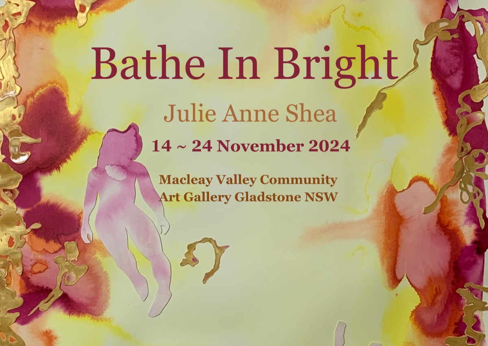
This exhibition of collaged inks shares a dreamed utopia, and the disruption of that vision by a recurring worming memory — the violation of a true earthly paradise.
My intention was to save and share an ethereal, other-worldly tranquility that I experienced in the South Pacific Islands of Tahiti — a place frequently referred to as a paradise on Earth.
I read accounts written at the time of European discovery and colonisation, papers written about the culture and history, and novels that evoke a similar feeling of a dazzling paradise. I recalled my research into the island’s mythology and culture while studying Tahiti in a 1980’s art school theory subject; early childhood delight listening to stories of the Pacific Islands; the promise of an exotic and exclusive paradise suggested by the Cussins Imperial Leather Soap TV ad; the potential to be self sufficient in abundant welcoming isolation like Gilligan’s Island; and, of course, the veneration of island life presented by Gaugin, Matisse, and many other artists.
I wanted to express this feeling of a utopia as an essence of my own experience — the clean light, a gentle telepathic silence, the drifting fragrance of flowers, in a vast and isolated blueness of sky, lagoon and ocean. The aura of a proud, golden population living at the breast of the Earth, the moon, their Gods, their garden home.
To avoid parroting the familiar imagery of the European aesthetic, the Kitsch, the “Dusky Maiden”, the directly re-presented, I cut up a descriptive passage from R L Stevenson’s In The South Seas, and randomly rearranged the words and phrases.
Following the newly written passage as loose instructions for processes and imagery prompts I…
bath(ed) the paper in bright yellow ink
added washes of blue and green one of these the ground
made prints of my palm for beneath the palms
drew flowers for bloom appeared
I used ink washes as spacious environments and populated them with collaged golden paper dolls living in this ethereal other world, backs turned, resting, relaxing, sleeping and floating: vulnerable, though aware of our presence.
I interpreted the blue of the clove as a homonym — the Blew of the Clove. For several months I had avoided the persistent memory that the Polynesian Islands were forced to host the French Atomic Bomb tests. Then, like the eroding concrete caps on radioactive waste dumps, my resolve disintegrated and reality leaked through. The pacific vision interrupted, the collaged cutting out became as much a cutting into. Colours moved from romantic washes of moonlight and dawn to harsher exploded daylight fracturing (jewels pencilled out the lighter on the more dark).
I remember ‘Oro — Polynesian god of wars, volcanoes, lightening and fine art: destruction and creation. The audacious experimentation by the French authorities of 193 nuclear test explosions between July 1966 and January 1996 was, however, only to gain military superiority. Local inhabitants were not informed. The environmental and health effects were disguised and denied. This was the knowing destruction and poisoning of an Eden. Resultant radioactivity seeps through the ocean and into all of our lives today.
Repurposing failed backgrounds and recycling paper off cuts became a substantial creative consideration during the making of these artworks and suggests the obvious way forward — to work with that which remains.
Room 1
{kind=link}
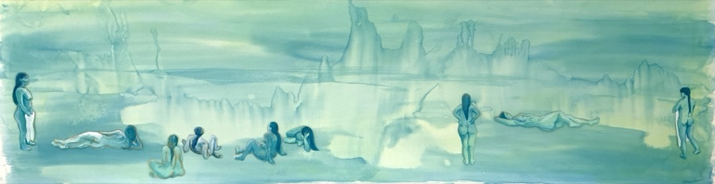
A landscape of volcanic peaks and still lagoons. In harmony with the world, gold rimmed figures bask in blue luminosity and a rhythmic silence. A spaciousness accommodates the bathers, their guardians and we viewers.
{kind=link}
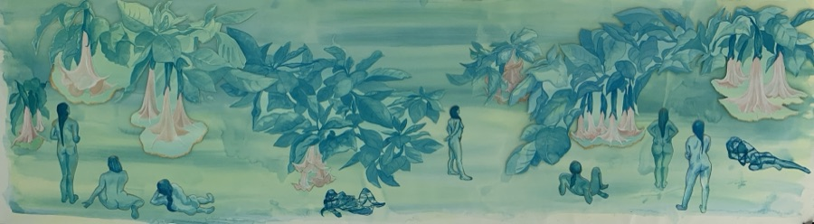
An elegant aroma pervades the world as moonlit dreamers drift into the realm of memories, spirits and visions.
{kind=link}
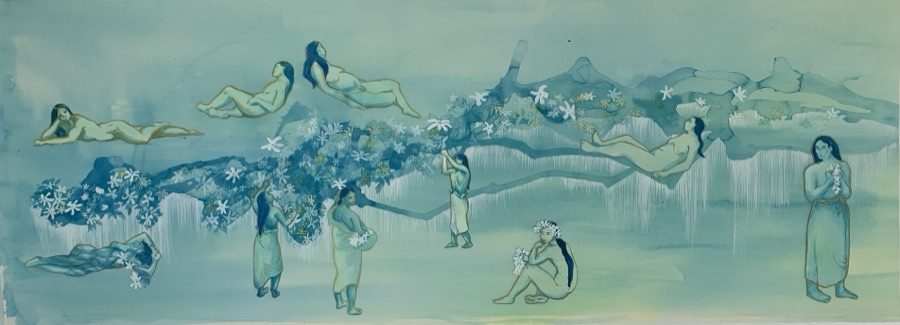
The night flower blooms so heavy in scent — it rains down on our people. The night flower so abundant and beautiful — we collect the blossoms to adorn our bodies.
{kind=link}
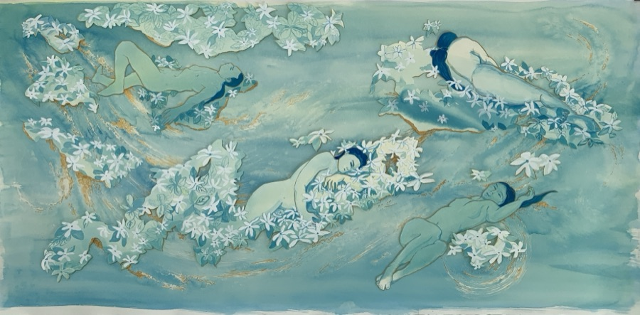
The scent so strong that it reaches our people scattered over the oceans and calls their soul home at the end of the day.
{kind=link}
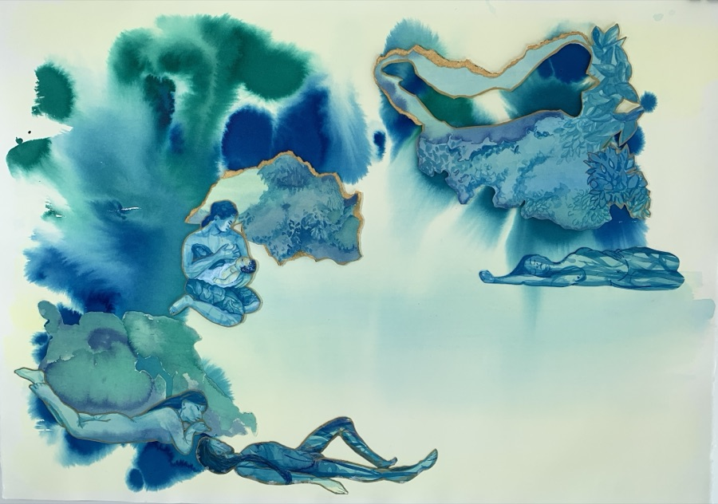
Not separate from the challenges of existence but in dutiful respect and with grace.
{kind=link}
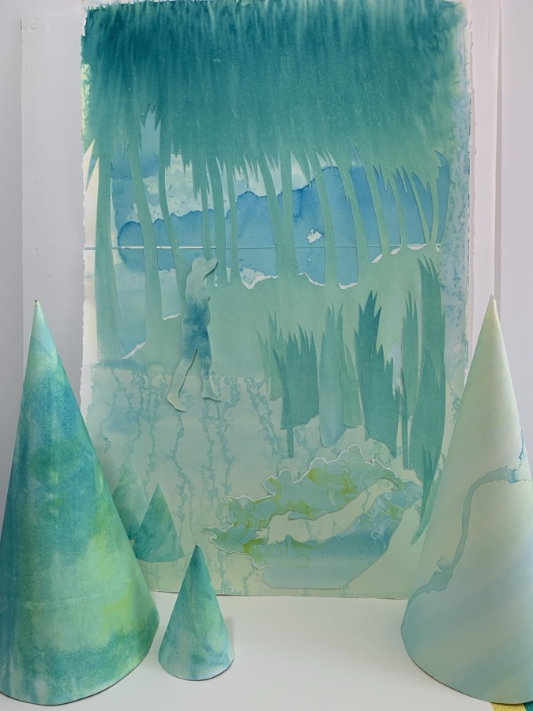
The gentle warmth of the humid air, the softly stroking water. Light, air, and body are one.
{kind=link}
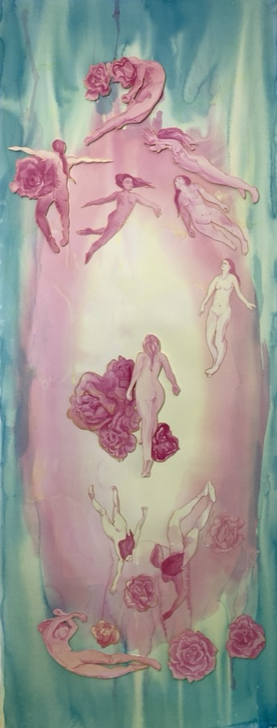
The embrace of unapologetic sensuality as we float in a sea of creation.
{kind=link}
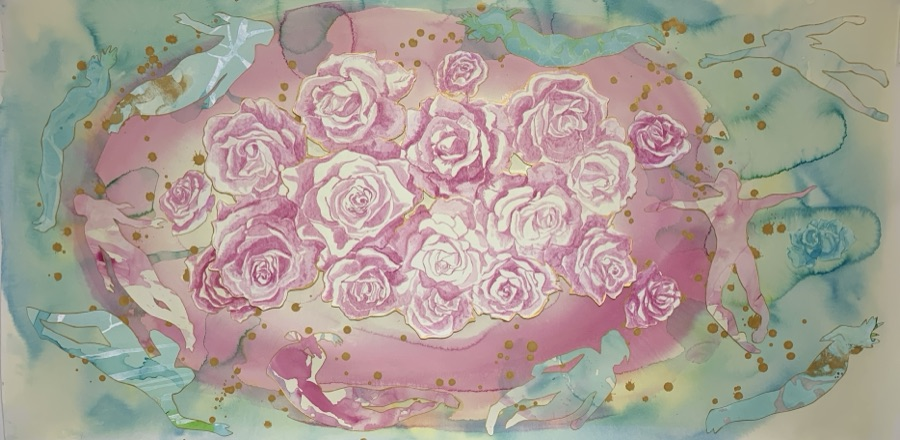
We are invisible, and indivisible from the bath of light as the sun rises and glorifies the dawn.
{kind=link}
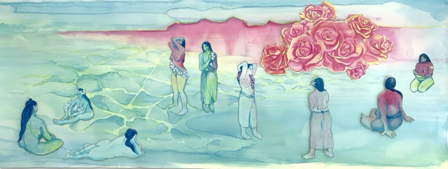
As the sun rose there are our dreams and bodies to tend to, and flowers to be strung.
{kind=link}
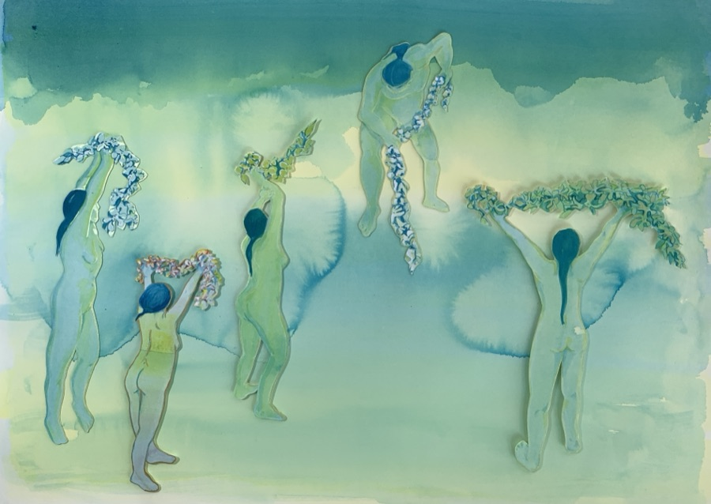
‘Oro, the god of lightening, thunder, volcanoes, war and fine art reminds us of our ephemeral existence. We offer gifts to appease the force before which we are powerless. We offer thanks for that which has been created — our home, our garden, our selves.
Room 2
{kind=link}
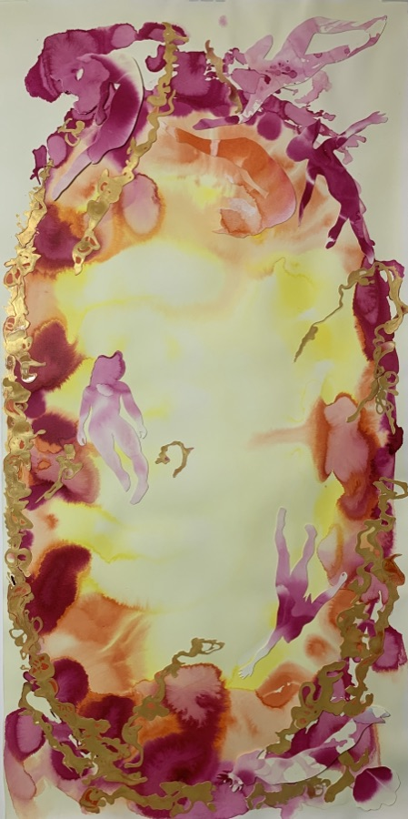
{kind=link}
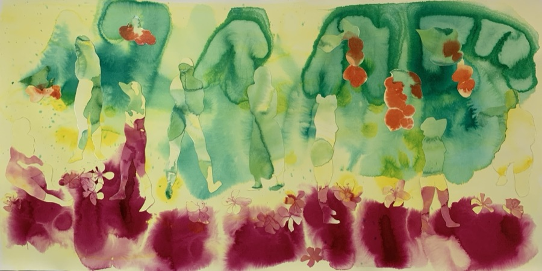
Mururoa — “Early European explorers found that the atoll was not continuously habitated.” “In 1834 a visiting ship killed all but three inhabitants that lived there.” The atoll was planted with fruit and coconut trees. It became a copra plantation. Hotu Painu flowers that wash onto the shoreline signify unwelcome visitors.
{kind=link}
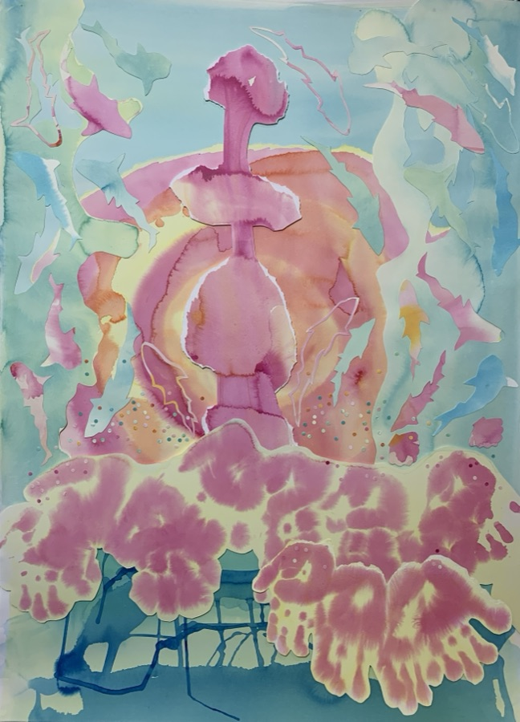
In 1963 Charles de Gaulle gave the go ahead to prepare for nuclear testing in the faraway paradise. Despite objections from some 30 members of the Polynesian Territorial Assembly, the first nuclear test was conducted on 2 July, 1966, codename: Alderbaran. Alderbaran was suspended from a helium balloon over the lagoon. “The explosion sucked all the water from the lagoon raining dead fish and mollusks down on the atoll.”
{kind=link}
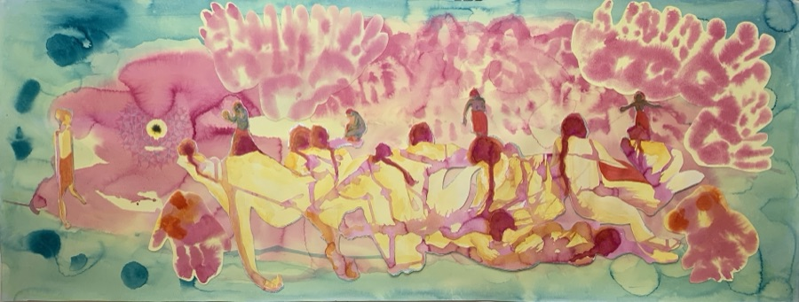
De Gaulle was present at the Betelgeuse test on September 10, 1966. Though weather conditions were unfavourable the test went ahead, the wind pushing the clouds of radiation across the Pacific and raining down onto Samoa. “C’est magnifique” de Gaulle remarked.
{kind=link}
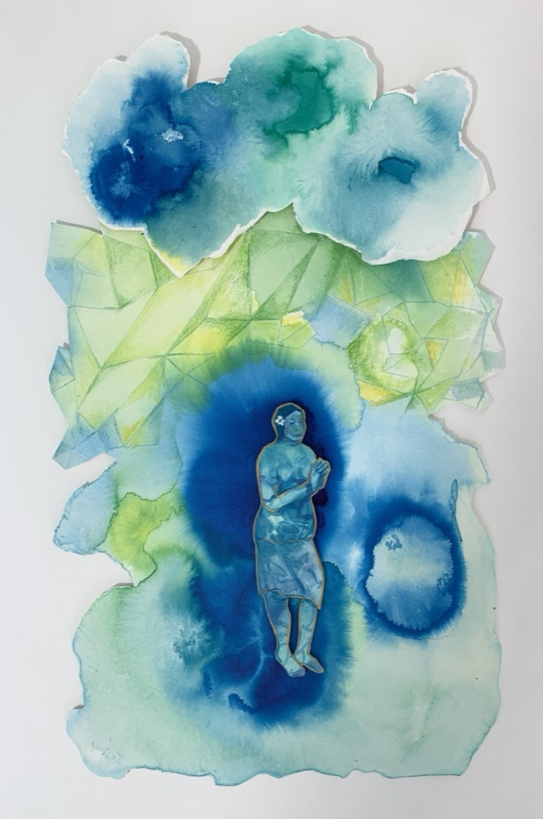
The monotheistic worship of ‘Oro made the transition to Christianity of the Tahitians an easy task for European missionaries.
{kind=link}
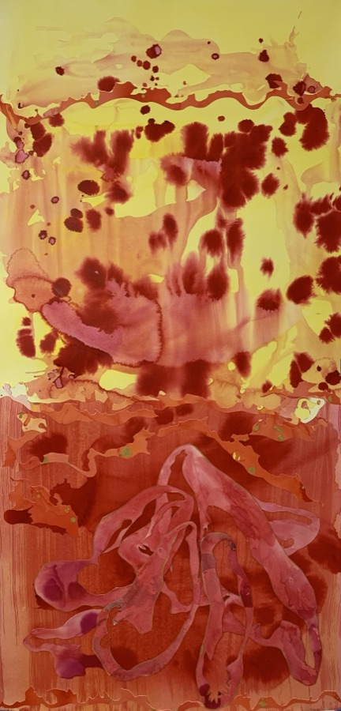
{kind=link}
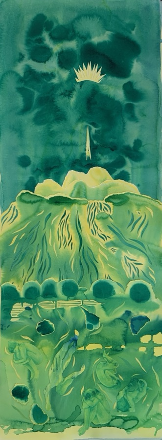
July 25, 1979 — the Tydee atomic test weapon stuck halfway down a shaft drilled into the atoll. It was exploded anyway, causing an underwater landslide and triggering a major tsunami which spread through the Tuamoto Archipelago.
{kind=link}
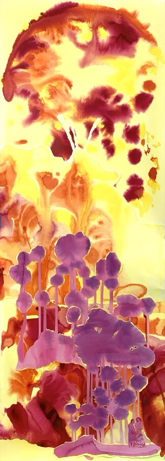
1968 — Canopus, France’s second biggest hydrogen bomb, suspended from a helium filled balloon above Fangataufa. Everything on the atoll was obliterated. Fallout affected neighbouring Tureia, Pukarua, and Reao where the inhabitants were neither informed nor provided shelter. They were relocated two days later to Tahiti for medical treatment.
{kind=link}
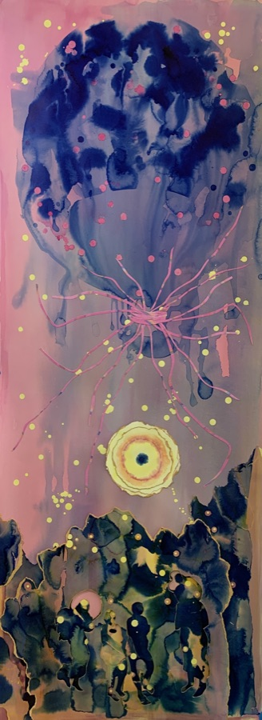
Betelgeuse means “on the shoulders of giants”. The name of an atmospheric H bomb suspended from a balloon over Mururoa lagoon. The figures from Gaugin’s 1891 Ia Orana Maria (Hail Mary), treasured by Polynesia and the West alike, are cut away from their world as the heart is cut out from those who trusted in the best intentions of their colonial “guardians”.
{kind=link}
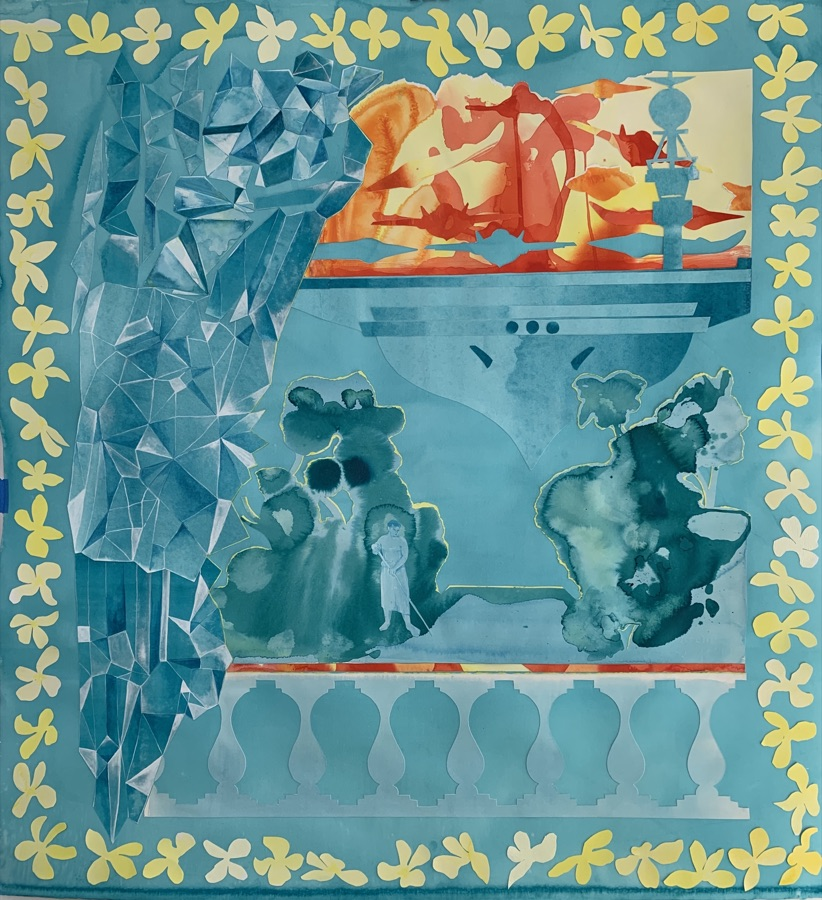
This image was suggested to me in a way I could not ignore. I soaked the paper in a bath of blue ink then hung it on the bathroom wall to add more colour and to dry. The resulting stain resembled the composition of Matisse’s drawings from his 1930 trip to Tahiti, and a resulting tapestry cartoon from 1935. The view has changed from a pleasant sunset Papeete harbour view to one of the Charles de Gaulle nuclear powered aircraft carrier disgorging its planes in an explosion of sunset colours. The warrior cleans the tourist’s pool. An ice curtain frames the window from inside an air-conditioned room.
{kind=link}
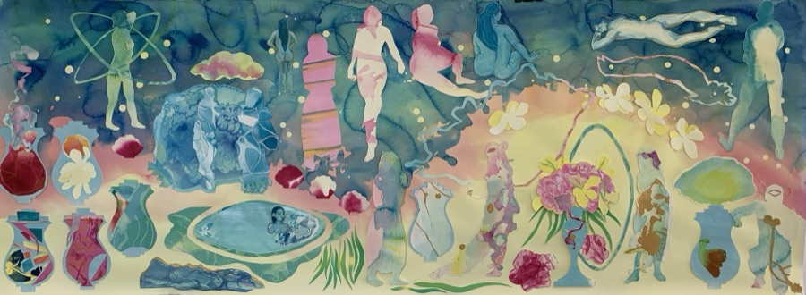
An illuminated market place with ornate fashion and extravagant floral arrangements. A figure crouches beneath an atomic memory, hearing and seeing all — heart bleeding. A lit path leads to a pool; containers store and leak excesses. In the shadows of the night a fractured heaven gathers in communication with the past as it feels its way towards a compromised future made of salvaged parts.
{kind=link}
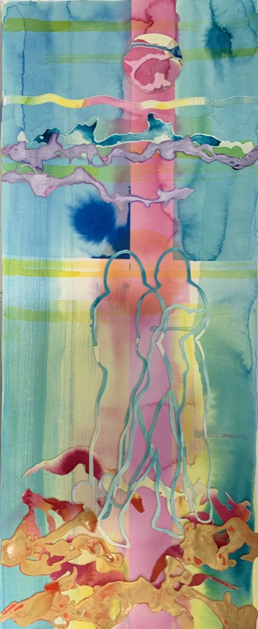
An unnecessary series of failures, this reuse of left over parts unexpectedly aligns with the final phrases of the cut up process prompt paragraph.
{kind=link}
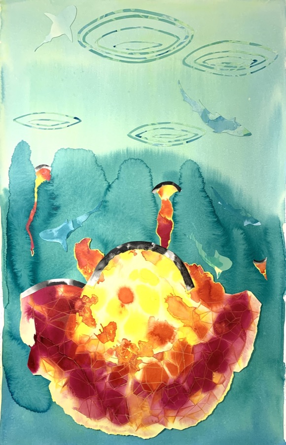
Meanwhile, the corroding concrete domes covering the blast tunnels and radioactive dumps leak waste into the test site lagoons and flow out to the wider oceans.
{kind=link}
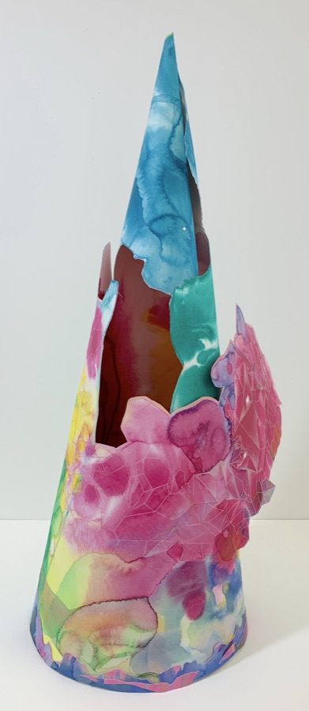
{kind=link}
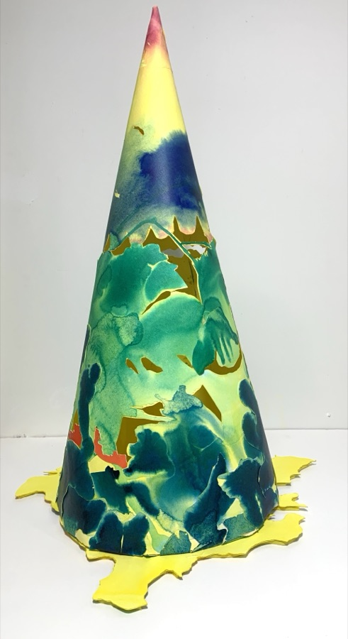
{kind=link}
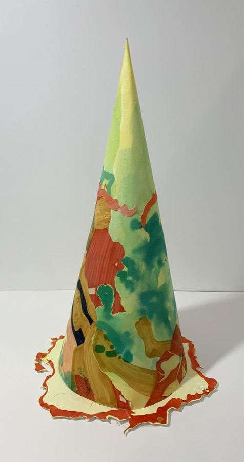
First to be started, last to be completed, the three 3D islands align with the imagery suggested by the cut up paragraph.
{kind=link}
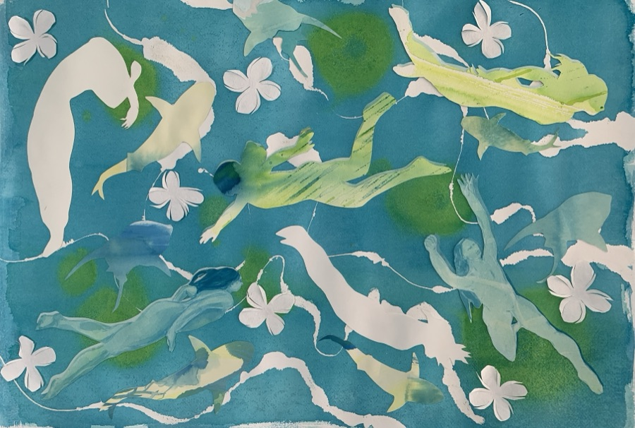
Acknowledgements
Thank you to my mentor, Amy Kennedy; Juan Cosgayon, professional installer; the committee and volunteers of the MVCAG; my very patient and supportive family and friends; and Sandy, the Tahitian who whispered a reminder of the nuclear testing in French Polynesia.
References
Gaugin, P — Noa Noa: The Tahitian Journal — 1985 — Dover; first published as Noa Noa — 1919 — Nicholas Brown, NY, pp 50–54 (for the legend of ‘Oro and the origin of the Areois)
Stevenson, R L — In The South Seas — Part 1: The Marquesas (1888) — published 1896 — pp 20–21
Johns, Captain W. E. — Biggles in the South Seas — 1940 — Oxford University Press
Melville, H. — Typee: A Peep at Polynesian Life — 1892 — L C Page, Boston
Gilbert, E — The Signature of All Things — 2013 — Bloomsbury, London
Salmond, A. — Aphrodite’s Island: Sexual Mythologies in Early Contact Tahiti — 2011 — University of Hawai’i Press
Tamaira, A. M. — From Full Dusk to Full Tusk: Reimagining the “Dusky Maiden” through the Visual Arts — The Contemporary Pacific, Volume 22, Number 1 — 2010 — University of Hawai’i Press
Henley, J. — France has underestimated impact of nuclear tests in French Polynesia, research finds — March 9, 2021 — The Guardian
Window In Tahiti — Henri Matisse — 1935
Maternite II — Paul Gaugin — 1899
Ia Orana Maria (Hail Mary) — Paul Gaugin — 1891